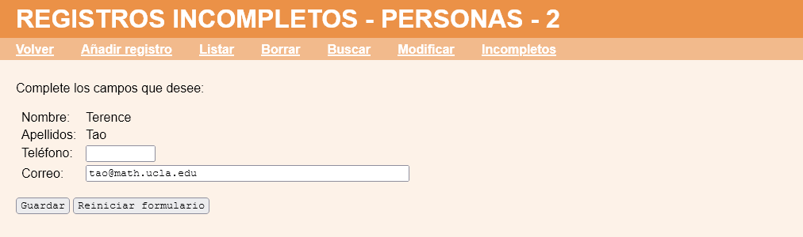

Exámenes - Bases de datos - Registros de personas incompletos
En este ejercicio se debe ampliar la aplicación proporcionada en la plantilla de manera que el menú de personas ofrezca a los usuarios básicos y a los administradores una opción nueva llamada "Incompletos", que mostrará los registros en los que falte algún dato y ofrecerá la posibilidad de completarlos.
Registros de personas incompletos - Comentarios
Si no falta ningún dato en ningún registro, se mostrará un aviso:
Si hay registros en los que falta algún dato, se mostrará la lista de ellos:
Al seleccionar un registro, se mostrará un formulario en el que únicamente se podrán rellenar los campos vacíos. Los campos no vacíos deberán guardarse en controles ocultos.

Los nuevos datos se guardarán en la base de datos: